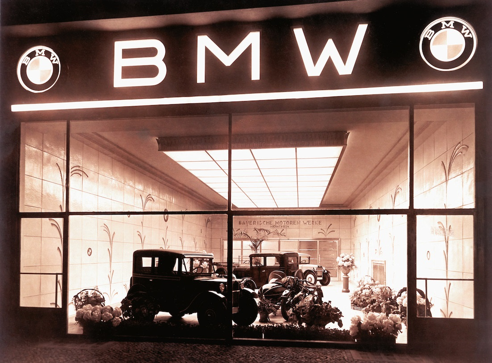
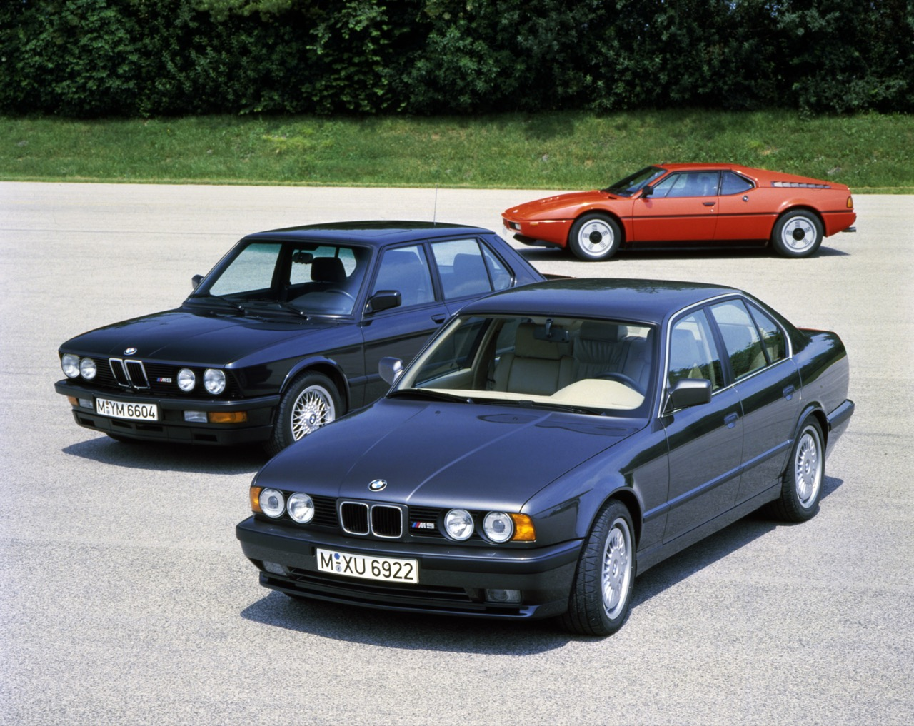

BMW, of voluit Bayerische Motoren Werke, werd in 1913 door Karl Friedrich Rapp opgericht als fabriek voor vliegtuigmotoren. Ok, maar dat zou toch betekenen dat BMW drie jaar geleden haar honderdste verjaardag vierde? Niet dus, aangezien BMW het jaar 1916 als de officiële oprichtingsdatum beschouwt. In 1922 kwam BMW namelijk in handen van Bayerische Flugzeug Werke, dat in 1916 is opgericht.
BMW heeft nogal een geschiedenis en deed in zowel de eerste als de tweede wereldoorlog goede zaken, maar niet altijd op het gebied van auto’s. In de eerste wereldoorlog was de onderneming namelijk een groot leverancier van vliegtuigmotoren. Het Verdrag van Versailles (1919) verbood Duitse ondernemingen echter om vliegtuigen te bouwen, waardoor het moeilijk overleven was. Toen is BMW in 1922 officieel Bayerische Motoren Werke gaan heten, en is het motoren gaan maken. Ook komt het logo zoals we dat nu kennen uit dit jaartal. Er wordt wel eens aangenomen dat het logo ook gebaseerd is op vliegtuigen: een witte propellor in de blauwe lucht. Het is echter veel simpeler: het zijn de kleuren van de Beierse vlag. Dat het merk tijdens de tweede wereldoorlog een groot leverancier was van vliegtuigmotoren aan de Luftwaffe is een pijnlijk stukje geschiedenis en vergeet BMW graag zo snel mogelijk. BMW is pas in 1928 auto’s gaan maken, en dit is duidelijk een goede stap geweest.
Sinds 1928 maakt BMW dus auto’s, en is het in Eisenach begonnen met het onder licentie produceren van de Dixi. Nee, niet de toiletten, maar een zeer compact autootje. Het was niets minder dan een Austin Seven elke in licentie gebouwd werd door de Duitsers. De Austin Seven bleek in Engeland een grote hit te zijn omdat het voldeed aan de stijgende vraag naar betaalbaar vervoer. De eerste serie Dixi’s waren niets minder dan kant en klare kits welke BMW gewoon in elkaar schroefde. Na deze serie had BMW al dermate veel opgestoken dat ze met hun eigen interpretatie van de Seven kwamen, de 3/15. Ja, het laatste getal staat voor het aantal trappende paarden dat het 750cc vierpits torretje weet te mobiliseren. Hierna is het verder gegaan met het produceren van auto’s. Vanaf 1933 werden de eerste echte eigen auto’s gemaakt. BMW begon al met premium voordat het cool was, en werd bekend om de sportieve modellen met sterke motoren, alhoewel bescheidener auto’s altijd van belang zijn geweest om daadwerkelijk aantallen te kunnen maken.
Op dat moment breekt de Tweede Wereldoorlog uit en ziet BMW zich genoodzaakt vliegtuigmotoren en motorfietsen te produceren voor het leger. Meer dan 25.000 concentratiekamp gevangenen zijn ‘in dienst’. Wederom een periode welke het merk in verlegenheid brengt. Na een korte ban (2 jaar) om motorvoertuigen te maken krabbelt BMW weer overeind met de bouw van hun modellen. Om een nieuwe richting in te slaan wordt er besloten om een concurrent van de Mercedes 220 te ontwikkelen, de BMW 501, de eerste BMW met een V8. Ook hier zijn weer diverse varianten van, maar de mooiste en meest significante is de 507. Niet alleen was dit een spectaculaire sportwagen, het was ook bijna de ondergang voor BMW. De ontwikkelingskosten rezen de pan uit en de 507 was daardoor veel duurder dan gepland. Slechts 252 stuks werden er gebouwd, waarvan één voor Elvis Presley.
BMW is vandaag de dag nog steeds hard aan het groeien, wel ziet men in dat ze met de tijd mee moeten gaan en die “i” modellen zijn het resultaat hiervan. De veranderingen zullen echter verder dan dat gaan, en BMW is (net zoals de andere grote automerken) onder andere bezig met zelfrijdende auto’s. Als je de auto’s die BMW vandaag de dag maakt vergelijkt met de auto’s die men zo’n 70 tot 80 jaar geleden maakte, dan zie je een groot verschil. Als je de auto’s (als je ze dan nog zo kan noemen) die BMW over 70 tot 80 jaar zal maken vergelijkt met de auto’s die BMW vandaag de dag maakt, zul je waarschijnlijk een nog veel groter verschil zien. Met een jaaromzet van zo’n tachtig miljard euro, en een jaarwinst die de bijna de zes miljard aantikt, lijkt BMW een goede koers te volgen.